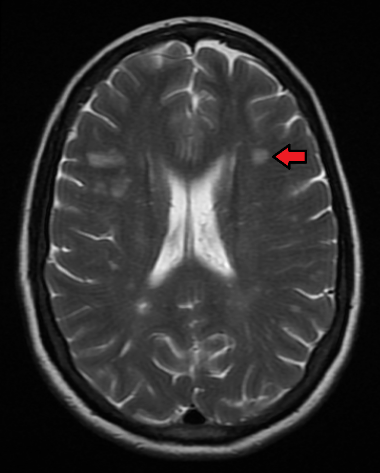

PÁGINA 3 · DADO DE PROVA + PROTOCOLO
Surto de EM: o grama e os dias
~85% dos casos que interessam à conduta de surto/manutenção estão na forma remitente-recorrente — e o PCDT do SUS já organiza a prova. Surto = corticoide; padrão-ouro: metilprednisolona 1 g IV × 3–5 dias; falha → plasmaférese.
Escada de conduta no surto de EM: metilpred IV, prednisona oral e plasmaférese.
Como ler a escada
Degrau 1 (verde) é o padrão-ouro do PCDT. Degrau 2 (âmbar) é a alternativa oral com menor evidência. Degrau 3 (coral) é o resgate por plasmaférese na falha. A régua visual é: não troque o surto por DMD de manutenção; se não resolveu, escale, não insista no corticoide.

James Heilman, MD · Wikimedia Commons · CC BY-SA 4.0 · fonte

O que esta RM ancora
Marca o território da EM (lesões de substância branca periventriculares e juxta-corticais, hipersinal em T2). Não é a peça do protocolo — o protocolo (1 g × 3–5 d IV; plasma na falha) está na escada de conduta e no cartão de protocolo.
Por que o tratamento da EM ganhou especificação
Existe protocolo clínico de diretrizes terapêuticas (PCDT) do SUS para esclerose múltipla — e esse protocolo já aparece em prova. Não é “detalhe administrativo”: é a grade que a banca e o sistema usam.
A forma que interessa
Para conduta de surto e manutenção, a forma central é a remitente-recorrente (surto-remissão): cerca de 85% dos casos — a grande característica epidemiológica de prova.
Surto: corticoide
Em surto, o tratamento é corticoide. Preferencialmente metilprednisolona 1 g por 3 a 5 dias. Esquema oral com prednisona é possível, mas a maior evidência permanece no esquema IV de metilprednisolona (1 g × 3–5 dias).
Se não resolver
Surto que não resolve com corticoide → plasmaférese.
Quiz
Q1. Conduta preferencial de surto de EM no recorte de prova/PCDT:
Gabarito: B. Surto = corticoide; preferência e maior evidência no metilpred 1 g × 3–5 d IV.
(A) (C) são lógicas de manutenção/DMD, não de surto agudo. (D) inverte: oral é possível, IV tem mais evidência.
Por que cair na C: misturar “droga potente de EM” com fase de surto.
Quiz
Q2. Forma clínica que concentra a maior parte dos casos e organiza o raciocínio de surto/manutenção:
Gabarito: B. RR ≈ 85% é a grande característica citada para conduta.
(A) (C) (D) trocam o rótulo da forma ou o momento epidemiológico.
Por que cair na A/C: confusão de nomes de formas de EM em prova.
Quiz
Q3. Surto que não resolve com corticoide em alta dose. Próximo passo no recorte:
Gabarito: B. Falha de corticoide no surto → plasmaférese.
(A) território de MG, não de surto de EM. (C) (D) abandonam a 2ª linha do surto.
Por que cair na A: contaminação com tratamento de placa/MG.